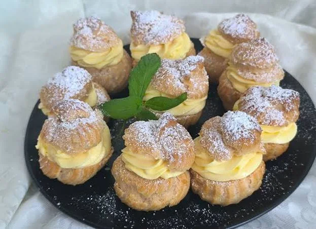

Zakuhati vodu, maslac, šećer i sol dok se maslac ne otopi. Maknuti s vatre i dodati brašno odjednom te miješati dok se ne sjedini.
Vratiti na laganu vatru i miješati dok se tijesto ne odvaja od posude. Malo ohladiti pa dodavati jaja jedno po jedno.
Tijesto staviti u slastičarsku vrećicu i oblikovati kuglice na papir za pečenje. Peći na 200°C oko 30 minuta bez otvaranja pećnice.
Za kremu umutiti žumanjke sa šećerom i vanilin šećerom, dodati gustin i malo mlijeka. Uliti u zagrijano mlijeko i kuhati dok se ne zgusne.
Dodati maslac i lagano umiješati snijeg od bjelanjaka. Ohladiti.
Krafne prerezati, napuniti kremom i po želji dodati šlag. Posuti šećerom u prahu.